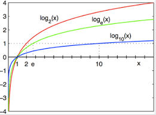

Math.log10(x) uses the base 10 to return the logarithm of a given number (x).
Note: If the parameter value is positive infinity, then the log() returns positive infinity.
If the parameter value is NaN or negative infinity, then the log() function returns NaN .
for example:
Math.log10(1000);
the result is: 3

Math.max() can be used to find the highest value in a list of arguments:
for example:
Math.max(100, -2, 56, 19.75, -163)
the result is: 100
Math.min() can be used to find the lowest value in a list of arguments:
for example:
Math.min(0, 150, 30, 20, -8, -200);
the result is: -200
Math.pow(x, y) returns the value of x to the power of y:
for example:
Math.pow(2,3);
the result is: 8
Math.random() function returns a floating-point, pseudo-random number in the range 0 to less than 1
(inclusive of 0, but not 1) with approximately uniform distribution.
for example:
Math.random();
the result is: 0.5878652912512752
For getting a random number between two values:
function getRandom(min, max) {
return Math.random() * (max - min) + min;
}
What's the usage?
1-Making a random password
2-In designing a game (i.e manch) in which you need to have a random number (such as throwing dice)